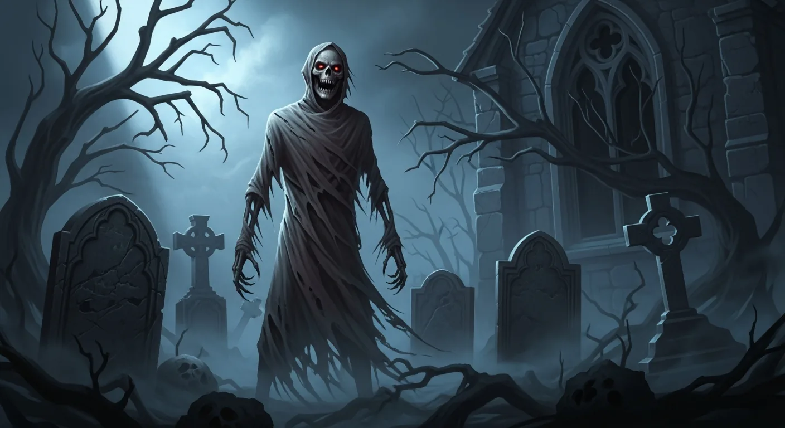
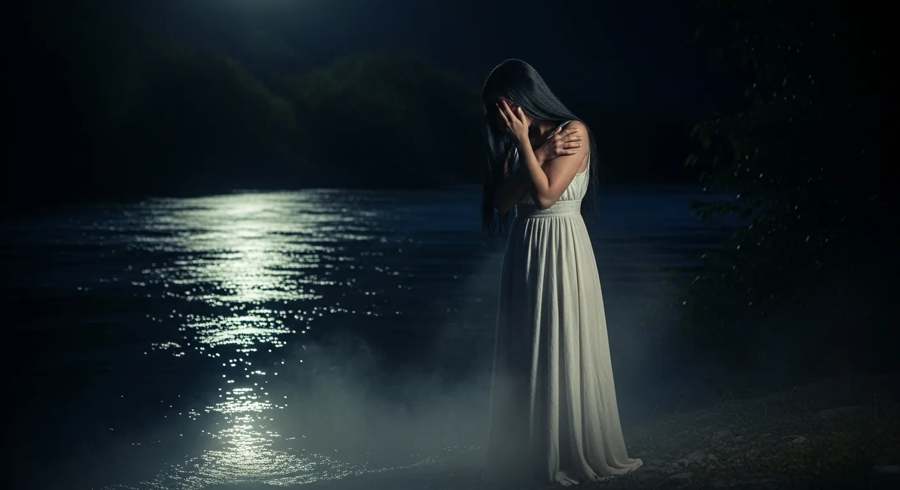
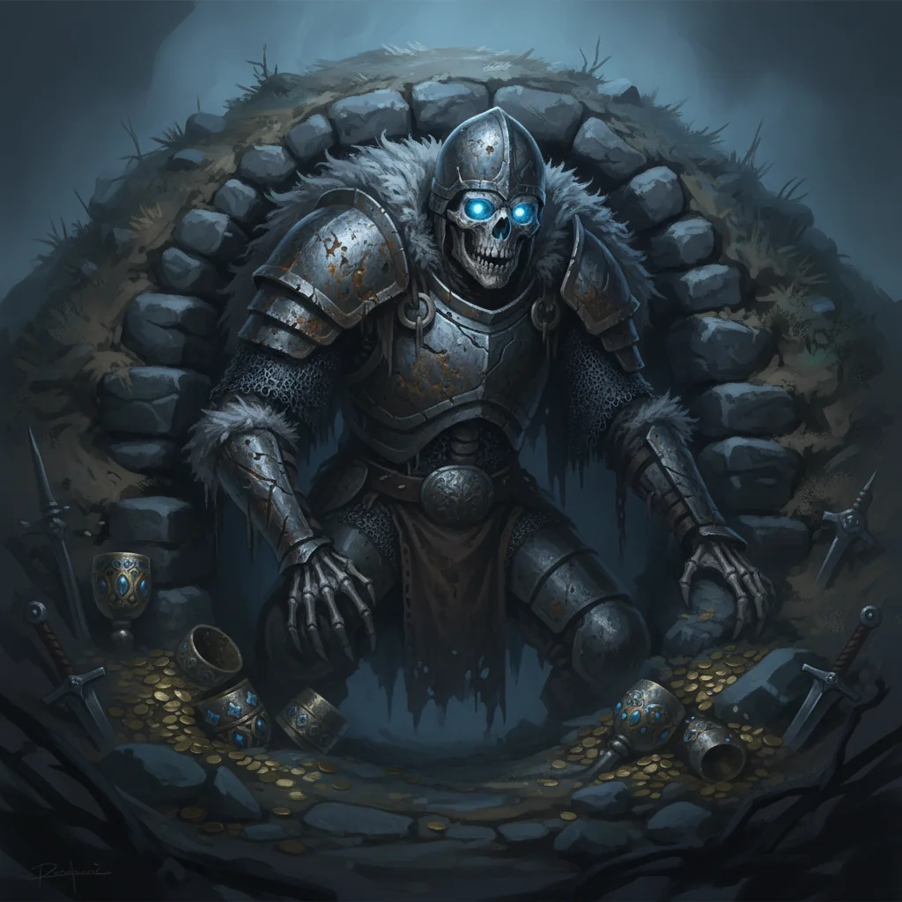
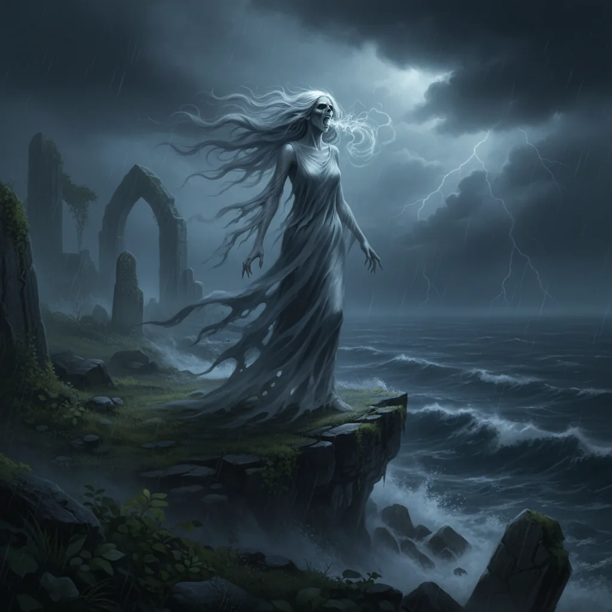

Kuratierte Sammlung
Die dunkelsten Einträge
Handverlesene Einträge aus unserem Bestiary — sortiert nach Dunkelheitsstufe.
Wendigo
Der ewige Hunger. Kannibalismus als Fluch — wer Menschenfleisch isst, wird selbst zum Monster.

Strigoi
Die untoten Blutsauger der rumänischen Folklore. Vorläufer des Vampirmythos — brutaler als jede Verfilmung.
Nachzehrer
Der norddeutsche Wiedergänger, der sein Leichentuch frisst und damit seine Verwandten ins Grab zieht.

Baba Yaga
Die Hexe mit dem Zaun aus Menschenknochen. Sie hilft — oder sie verschlingt. Du hast keine Wahl.

La Llorona
Die Mutter, die ihre Kinder ertränkte. Ihr Weinen hallt durch die Nacht — wer es hört, ist bereits verloren.

Draugr
Die untoten Wächter nordischer Gräber. Sie können ihre Größe verändern und verschlingen ihre Opfer im Ganzen.
Black Annis
Die blauhäutige Hexe von Leicester. Sie kratzte ihre Höhle mit bloßen Händen in den Fels — und hängte die Häute ihrer Opfer zum Trocknen auf.
Onryō
Rachegeister der japanischen Folklore. Frauen, die im Leben ungerecht behandelt wurden und im Tod unaufhaltsame Zerstörerinnen werden.

Banshee
Die Todesbotin. Ihr Schrei bedeutet, dass jemand in deiner Familie sterben wird — und dagegen gibt es kein Mittel.